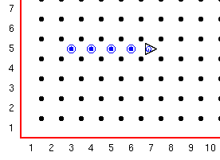

Je zult ontdekt hebben dat om de robot te plaatsen je een lijn gebruikt zoals:
Robot 1 2 N 0
En de nummers en letter betekenen:
rij kolom richting (N, W, Z, O) aantal piepers
Piepers? Wat zijn dat? een robot kan piepers meenemen, dit zijn kleine objecten die Guido kan gebruiken.
Je kunt ze door Guido laten neerzetten of oppakken. Guido kan deze piepers alleen gebruiken als hij op dezelfde plek staat.
Guido heeft ook een pieperzak waar hij de piepers in kan bewaren die hij oppakt of van waar uit hij piepers kan neerzetten. Je kunt de aantal piepers waar Guido mee begint opgeven in je wereld bestand.
De commando's die met piepers werken zijn onderdeel van de robot commando's die we zullen gaan ontdekken
De complete lijst is:
beweeg linksaf pak_pieper plaats_pieper zetuit
Opdracht:
Plaats de robot met 4 piepers op de hoek van de 1e straat en de 5e laan, richting oost.
Hij moet dan twee stappen richting het oosten nemen, een pieper plaatsen, en dan iedere keer een stap nemen en een pieper plaatsen totdat er geen piepers meer zijn.
Dan moet hij nog een stap nemen en uitschakelen.
Wanneer het programma klaar is moet het er als volgt uitzien:

Tip:
Bedenk welke dingen Guido zou moeten doen, en kijk dan welke commando's je zou kunnen gebruiken.
De naam vertelt je gelijk wat het commando doet.
Deze serie Guido van Robot lessen zijn geschreven door
Roger Frank.
Commentaar and suggesties over deze lessen kunnen gestuurd worden naar
Stas Zytkiewicz die de lessen
vertaalde naar het Nederlands.
De orginele lessen zijn te vinden op de
Guido van Robot website.
Copyright
© 2003 Jeffrey Elkner.
© 2007 Stas Zytkiewicz.